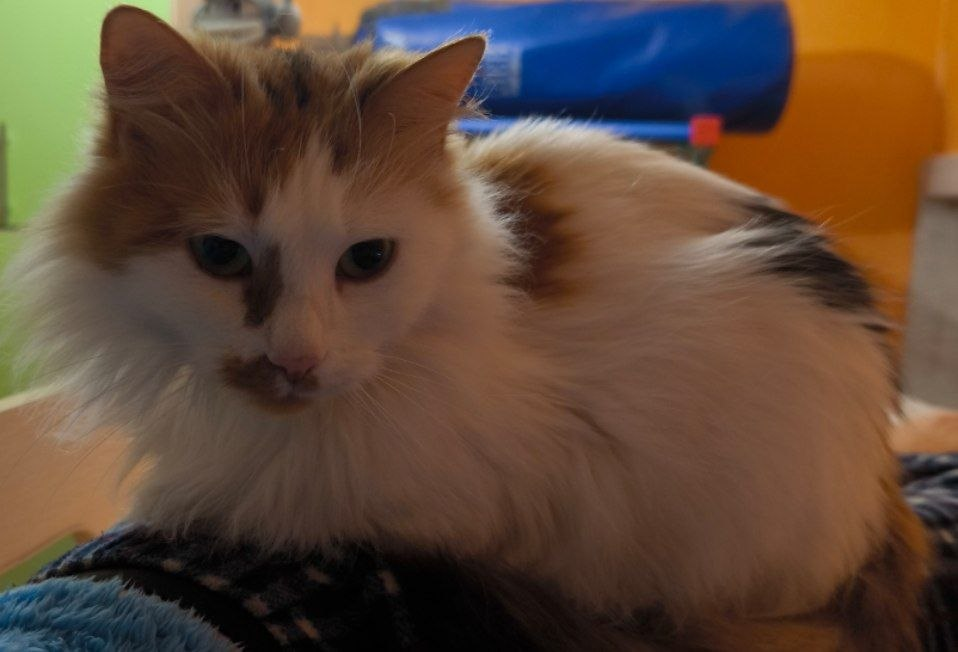
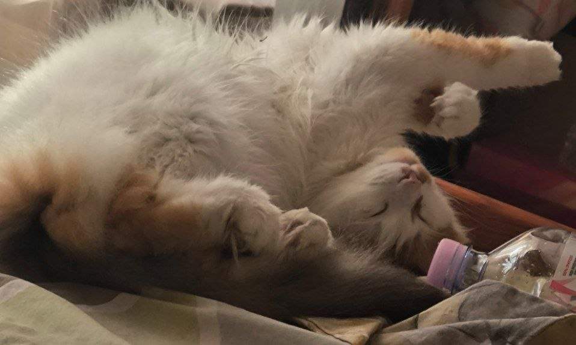
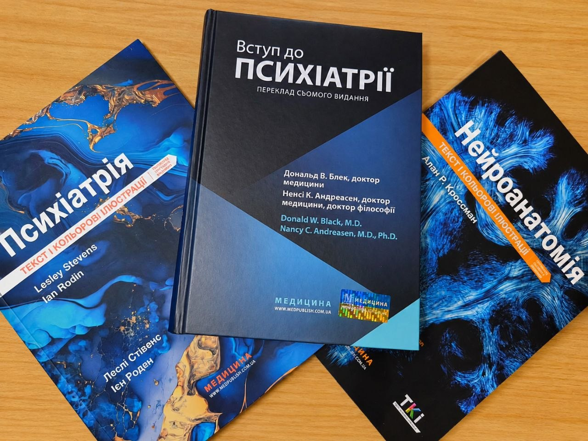

Хто я?
Привіт! Мене звати Максим, мені АЖ 29 років. Я мрію стати Full-stack розробником або, як каже бабця з роботи - "комплюторщиком". Дозволь мені трохи розповісти про себе та те, що мене оточує.
Моя кицябубочка

Мою кицю звати Боня, їй 6 років. В неї шизотиповий афективний розлад. Ну, або інший психічний розлад. В будь-якому випадку з таким темпераментом не можна бути психічно здоровою. Ось так вона спить:

Моя слабкість

Щоб краще розуміти природу моєї істеричної кішки, мені доводиться читати спеціалізовану літературу.